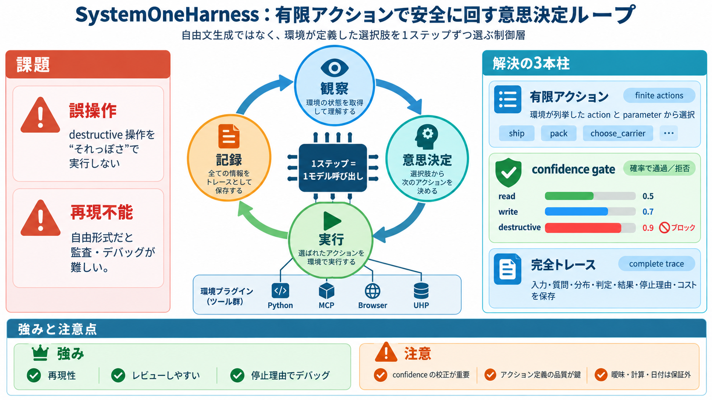

HarnessRouter Open-Sources System One Harness: One Typed Decision per Step | HarnessRouter
The harness serves itself over the Unified Harness Protocol, and the conformance suite that ships with the protocol repo…

有限アクションで安全に回す
System One を「観察→意思決定→実行→記録」のエージェントループとして動かすためのハーネスで、自由文生成ではなく 環境定義の有限アクションを1ステップずつ選びます。
英: finite actions / confidence gate / complete trace（有限アクション・確信ゲート・完全トレース）を中核に置きます。
誤操作と再現不能が課題
意思決定モデルをそのまま環境に接続すると、危険な操作が混ざりやすく、さらに「なぜそう判断したか」が追えない問題が起きます。
観察→決定→実行→記録
コントローラが状態を観察し、利用可能な行動を“型付きの質問”にコンパイルして、モデルに1回リクエストするだけで次の行動を決めます。
自由文ではなく選択
モデルは自由に“書く”のではなく、環境が列挙した有限の駒（actions）から1つを選び、必要ならパラメータも選びます（自由作文なし）。
confidence gateで実行制御
read/write/destructive それぞれに対して最小確率しきい値を設定し、モデルの提案が足りない場合は未決として扱い、危険な実行を抑制します。
完全トレースで監査可能
各ステップで、入力・質問・確率分布・判定・実行結果・停止理由に加えレイテンシ／コストまで逐次トレースとして記録します。
1ステップの設計が効く
「1ステップにつき1モデル呼び出し」かつ「生成アクションなし（環境が定義した選択のみ）」が、挙動の予測可能性を上げます。
環境プラグ可能性が強み
同一コントローラで、プロセス実行、MCPサーバ、ブラウザDOM制御（有限アクション化）、さらにUHPを介した配信まで扱えます。
realtime は履歴を抑える
環境が動き続ける場合、拒否や繰り返しの意思決定を“時間の進行（clock tick）”として扱い、履歴を短く保ちつつ最後に有効だった行動を維持します。
読み取れる強みと限界
ベンチマークは「小さく決定的なタスクで完了できる」点を支持しますが、曖昧状態・算術・日付・長い無関係コンテキストへの一般化は主張しません。
批判的に見る：confidenceと環境
提示情報だけでは、confidence をどう定め／校正し／しきい値をどう調整するかの厳密さは読み取りにくいです。加えて、有限アクション化の“環境側のモデリング品質”がボトルネックになります。
運用志向の制御層
SystemOneHarnessは、モデル単体より「安全に動かす制御層」を中心に据える設計です。
導入の鍵は「アクション定義と危険度分類をどれだけ良く作れるか」。そこが揃うほど、設計思想の価値が出ます。
The harness serves itself over the Unified Harness Protocol, and the conformance suite that ships with the protocol repo…
## Security Grades Qualys SSL Labs Harness Platform A+ ## Training Employee Privacy Training Phishing Traini…
System 1 supports a proactive machinery monitoring strategy by detecting changes in conditions before failure occurs.Sys…
Unified Intelligence™ in a single dashboard – delivered through a powerful cloud platform for real-time, total security …
Shop Online loginLogin Shop Account Login Learning Center Login Return to All Press Release # UE Systems Introduce…